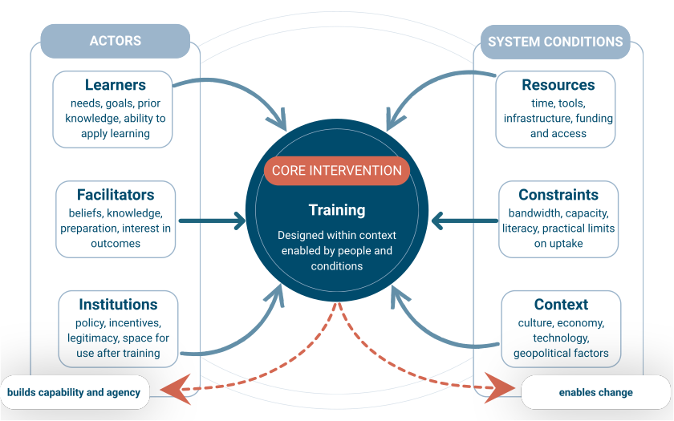

Teaching for Impact: Designing Effective & Open Training
Part 1
| Welcome & warm-up |
| Exercise 1: System Map |
| Exercise 2: Theory of Change |
| Exercise 3: Learner Reality Check |
| Mid-session synthesis |
| Break (20 min) |
| How people actually learn |
| Exercise 4: Learning Outcomes |
| Exercise 5: Designing an Activity |
| Closing reflection |
In cross-team breakout rooms (3–4 people), introduce yourself:
Alphabetical order by zoom name
7 minutes
Take 1 minute to think silently.
Who wants to share?
We're working from the outside in:
Everything today uses your own training.
Think of a training that didn't work — yours or one you attended.
What went wrong?
Was it the content… or something around the content?

10 min · Own-team breakout
One team presents their system map highlights
You've mapped the terrain your training operates in.
Now: how does training actually lead to change?
A trainer delivered a Python course to a department. The learners weren't programmers, but Python could genuinely have made them more efficient.
The course went well — but nobody changed how they worked.
The department went through multiple Python courses — still no change.
Why?
Think about the assumptions hiding in each link of the chain
10 min · Own-team breakout
6 min · Cross-team peer review
This isn't about criticism — your goal is to help each other, and to see how this applies to your own work
One person per breakout: share the most unexpected assumption you found.
You've mapped the system and the logic.
Now we zoom in on the people.
Everything you design will land — or not — based on how well it fits the humans who show up.
We were teaching basic web development to women online. The instructions said "open a text editor" — and many participants didn't know what that meant.
We hadn't met the learners up front. We'd aimed at one level of computer literacy. A different audience showed up.
We spent weeks creating content, but an unexpected audience showed up
Take 2 minutes of silent thinking before we go to breakout rooms.
10 min · Own-team breakout
Back at [TIME]
20 minutes
Three principles that should shape every design decision you make.
Working memory is smaller than you think.
Your job: reduce extraneous load so learners can focus on what matters. What are some strategies?
Memory is built when people pull knowledge out, not when you push it in.
People learn by talking, arguing, and building on each other's ideas.
Who has heard of learning styles?
Eg "visual learner", "auditory learner", etc
If you're an "auditory learner," could you learn to drive a car by listening to someone talk about it?
If you're a "visual learner," could you learn to play guitar by watching videos?
The evidence doesn't support matching instruction to styles.
What works: varying how you engage learners — because different activities build different kinds of understanding.
Let's consider what the learners should be able to DO after the training is over?
Learning Outcomes describe what learners will do, not what the training will cover.
| Vague | Strong |
|---|---|
| "Understand climate data" | "Interpret a local dataset to identify two practical risks and explain them to a non-specialist audience" |
7 min · Own-team breakout
8 min · Cross-team breakout
Note revisions as you go.
Who has a before-and-after?
Share an outcome that improved through the cross-team peer review.
You've written outcomes that describe what learners will do.
Now you design the activity that gets them there.
An activity is not a topic — it's a thing learners do that lets them practise the skill they need to achieve.
15 min · Own-team breakout
Pick one learning outcome from Exercise 4. Design an activity that helps learners achieve it. Or use one you already have
15 min · Whole group
10 min. Group discussion
Critique this teacher
You don't need to finish it today.
The point was to experience what it feels like to design from outcomes, not from topics.
Take a moment to appreciate what you have achieved so far
The workbook offers more useful tips and guidelines that you can explore
Each person, answer one question:
Answer these questions in the chat:
Hands up if you want to share with the group
Find one resource that relates to your topic.
This could be:
Don't overthink this — one is enough. You don't need something perfect!
The goal today was not to master all of this — it was to see the full picture and find the parts that matter most for your work.
Teaching for Impact: Designing Effective & Open Training